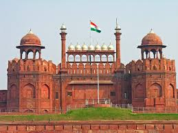
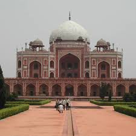
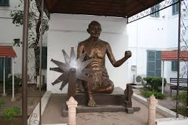
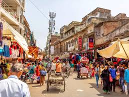
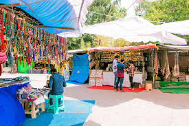
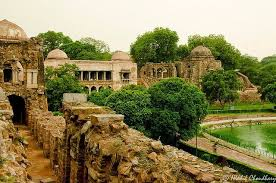
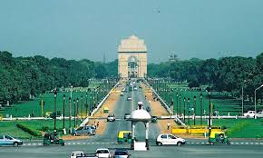
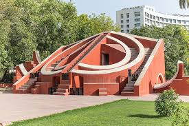

Historical Monuments
Red Fort (Lal Qila)

UNESCO World Heritage Site, historic fort with Mughal architecture.
Qutub Minar
UNESCO World Heritage Site, tallest minaret in India.
Humayun's Tomb

UNESCO World Heritage Site, Mughal-era tomb with gardens.
India Gate
War memorial arch honoring Indian soldiers.
Jama Masjid
Largest mosque in India, with stunning architecture.
Religious Sites
Lotus Temple
Bahá'í House of Worship known for its lotus-shaped architecture.
Akshardham Temple
Hindu temple complex with exhibitions and cultural shows.
Museums and Art Galleries
National Museum
Largest museum in India, showcasing art, archaeology, and history.
National Gallery of Modern Art

Art museum featuring modern and contemporary Indian art.
Gandhi Smriti

Museum dedicated to Mahatma Gandhi, located at his former residence.
Markets and Shopping
Chandni Chowk

Historic market street known for its bustling atmosphere and street food.
Connaught Place
Commercial and financial hub with shops, restaurants, and colonial architecture.
Dilli Haat

Cultural bazaar offering handicrafts, cuisine, and performances from across India.
Gardens and Parks
Lodhi Garden
Historic park with tombs, gardens, and jogging trails.
Hauz Khas Complex

Historic village complex with medieval ruins and a deer park.
Garden of Five Senses
Botanical garden with sculptures and themed gardens.
Cultural Centers
Dilli Haat
Cultural center with crafts, music, and dance performances.
Nehru Planetarium
Astronomy center with shows and exhibits on space science.
Other Attractions
Rajpath

Historic boulevard lined with government buildings and ceremonial events.
India Gate
War memorial dedicated to soldiers who died in World War I.
Jantar Mantar

Observatory with astronomical instruments from the 18th century.